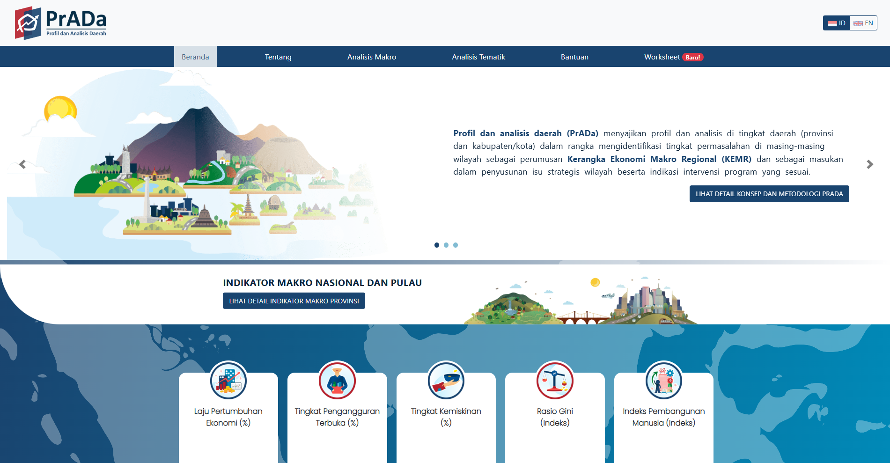
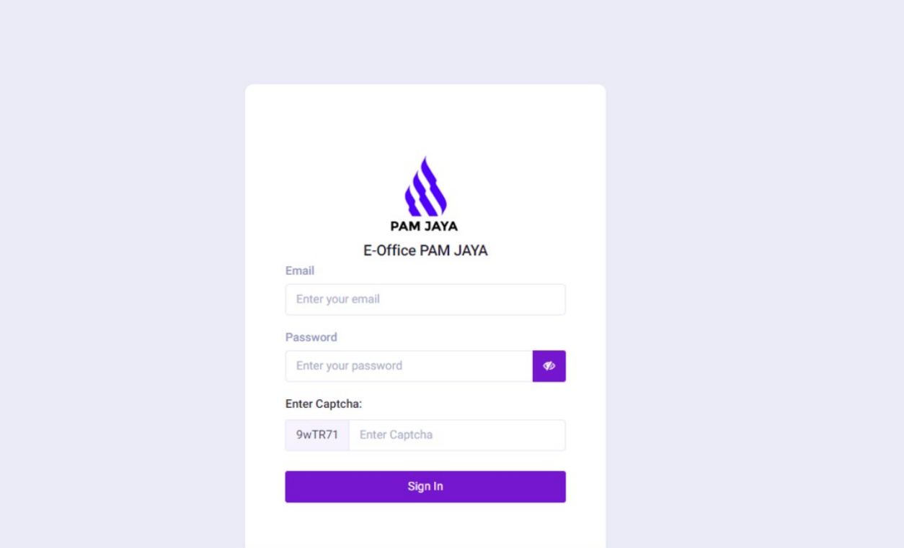

Back End Developer
PT Zahir Internasional
Mengembangkan backend yang efisien, database yang kuat, peningkatan performa, prinsip keamanan data, serta maintenance platform yang skalabel untuk ekosistem Zahir.
CurrentBackend Systems Architect
Saya merancang, membangun, dan menyempurnakan sistem backend, API, serta platform data yang menjaga aplikasi bisnis tetap reliabel di beban kerja nyata.
Profil
Fokus saya ada pada arsitektur backend, kontrak API yang bersih, performa database, integrasi service, dan business logic yang mudah dirawat. Pengalaman Go dan PHP saya dilengkapi pemahaman praktis tentang distributed system, keamanan, dokumentasi, dan kolaborasi lintas tim.
Saya menikmati proses mengubah masalah teknis yang kompleks menjadi sistem yang stabil, elegan, mudah dioperasikan, dan siap dikembangkan.
Pengalaman
PT Zahir Internasional
Mengembangkan backend yang efisien, database yang kuat, peningkatan performa, prinsip keamanan data, serta maintenance platform yang skalabel untuk ekosistem Zahir.
CurrentBappenas RI
Maintaining dan mengembangkan PraDa Bappenas, meningkatkan fungsi dan pengalaman pengguna, mendukung troubleshooting, migrasi CMS, serta optimasi performa.
GovTechAlus Technology
Membangun sistem web berbasis database menggunakan PHP, MySQL, integrasi frontend, dokumentasi teknis, dan penerjemahan kebutuhan bisnis menjadi spesifikasi teknis.
6 yrsBappenas RI
Mengembangkan aplikasi pendukung E-Musrenbang, mengelola data perencanaan, mengoptimalkan stabilitas, dan membangun Single Sign-On Bappenas.
SSOKeahlian & Stack
Selected Work

Kolaborasi perencanaan nasional

Platform workflow dokumen

Platform API produk
Pendidikan
Sarjana Teknik Informatika, 2015 - 2019
Rekayasa Perangkat Lunak, 2012 - 2015
Microsoft Technology Associate, Belajar Machine Learning untuk Pemula
Kontak